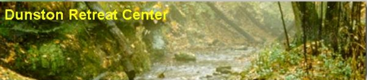

Next week at the Dunston Retreat Center
The annual meeting of the Midwest Marriage Encounter occurs at the Dunston Retreat Center, June 11-13. Registration is $50 and includes room and board. A boating trip on Lake Superior is planned for Saturday night ($10 fee).
Contact Mary Taylor at 555-2381 for reservation information.
Upcoming Events
June 11-13 Marriage Encounter
June 16-20 Recovering Alcoholics
June 25-27 Spirituality Workshop
July 2-4 Lutheran Brotherhood
July 9-11 Recovering Alcoholics
July 16-18 Duluth Fellowship
A letter from one of our guests
I'm writing to tell you how much I enjoyed my retreat at Dunston. I came to your center haggard and worn out from a long illness and job difficulties. I left totally refreshed. I especially want to thank Father Thomas Holloway for his support.
I've enthusiastically told all of my friends about the wonderful place you have. Some of us are hoping to organize a group retreat. Rest assured that you'll see me again. Going to Dunston will become a yearly event for me.
Sincerely,
Doris Patterson